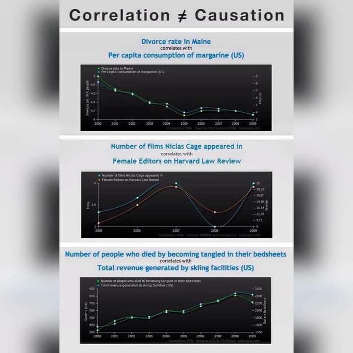
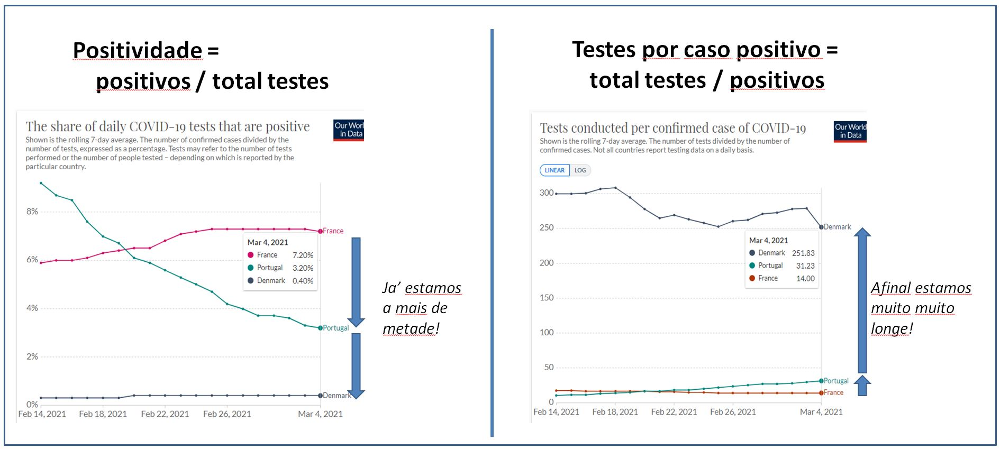
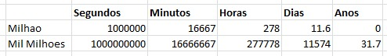

Estatistica¶
Cherry picking¶
https://pt.wikipedia.org/wiki/Evid%C3%AAncia_suprimida
Evidência suprimida, supressão de evidências ou evidência incompleta (em inglês: cherry picking) é uma falácia que consiste em citar casos ou dados individuais que parecem confirmar uma determinada posição, ao mesmo tempo em que se ignora uma porção significativa de casos ou dados relacionados que possam contradizer aquela posição. É um tipo de falácia de atenção seletiva, sendo seu exemplo mais comum o viés de confirmação. Ela pode ser feita de forma intencional e também de forma não intencional. É um grande problema em debates públicos.
Numa frase: se escolhermos os numeros que nos convem, e ignoramos a maioria esmagadora dos outros (que mostram o contrario), entao podemos "provar" tudo o que quisermos e o seu contrario.
Quando vemos "cherry picking" propositado, isso 'e ma'-fe'; Noutras pessoas pode ser apenas ignorancia cientifica e desleixo, quando partilham mensagem erradas sem as verificarem em fontes crediveis ("poligrafo", "fact checking", etc).
Correlacao vs Causalidade - Variaveis ocultas¶
Esta estatisticamente provado que quando se vendem mais gelados, ha mais afogamentos.
Sera' que as criancas caem na piscina a correr com o gelado na mao?
Nao. Uma nao causa a outra.
Em vez disso, ambas sao causadas por uma terceira variavel oculta: a tempertura.
Temperaturas altas levam a mais gelados e a mais afogamentos. https://www.thoughtco.com/correlation-and-causation-in-statistics-3126340
Em baixo muiot mais exemplos: 
Positividade vs Testes por caso Positivo¶
Testamos muito? Testamos pouco?
Os dois graficos abaixo mostram EXACTAMENTE a mesma informacao.
Mas no da esquerda parece que estamos a meio caminho, mas na direita estamos muito longe da Dinamarca.
Mais uma vez: sao o mesmo grafico. Sao os mesmos dados. A unica diferenca 'e quem 'e que divide o que.
O da direita mostra que fazemos o dobro dos testes de Franca, mas oito vezes menos testes que a Dinamarca.

Sensibilidade e Especificidade¶
Tudo relacionado com o covid 'e complexo.
A forma mais imediata de reduzir a complexidade 'e com estatística. A estatística tem vários conceitos que parecem triviais, mas nao o sao.
Estas duas frases parecem iguais, mas nao o sao:
- A) Doença -> Teste: "Se estou infetado, qual 'e a probabilidade de ter um teste positivo?"
- B) Teste -> Doença: "Se tenho um teste positivo, qual 'e a probabilidade de estar infectado?"
A diferença acontece porque os testes PCR falham demasiado.
Se nao falhassem, era trivial passar da frase A para a frase B.
E o problema 'e que os para assintomaticos so' sabemos o resultado do teste (frase B). Mas os assintomaticos criam cadeias, e levam outras pessoas a ter sintomas ou mesmo bem pior.
Algumas definicoes triviais:
- TP = True Positive
- "Estou infectado, e o teste acerta"
- FP = False Positive
- "Estou infectado, mas o teste erra"
- TN = True Negative
- "nao estou infectado, e o teste acerta"
- FN = False Negative
- "nao estou infectado, e o teste erra"
Estas definicoes sao muito mais complexas, mas necessarias:
- "Sensibilidade": TP / (TP+FN)
- Esta 'e a probabilidade que os infectados sao ENCONTRADOS correctamente.
- Valores altos baixam os falsos Negativos.
-
Valores altos dao boa confiança que um teste NEGATIVO 'e real. Nada dizem sobe testes positivos.
-
"Especificidade": TN / (TN+FP)
- Esta 'e a probabilidade que nao-infectados sao encontrados correctamente.
- Valores altos baixam os falsos Positivos.
- Valores altos dao boa confiança que um teste POSITIVO 'e real. Nada dizem sobe testes negativos.
Em geral referir apenas um destes valores 'e errado, porque 'e possível facilmente subir um 'a custa do outro (ao subir ou descer o nível mínimo de carga viral para decretar positivo, negativo ou inconclusivo).
Neste momento o testes covid típicos tem sensibilidade de 70% e especificidade de 95%.
Juntos estes valores sao fracos. Mesmo assim, dao uma preferência para os testes positivos;
Sem qualquer histórico adicional, um teste positivo 'e mais provavelmente de ser correcto que um teste negativo.
Fonte:
https://en.wikipedia.org/wiki/Sensitivity_and_specificity
Milhoes vs Bilioes de segundos¶
Todos os dias ouvimos falar de "Milhoes de euros", mas tambem de "Mil milhoes de euros".
Essa 'e a diferenca basica entre um Milionario e um Bilionario nos EUA.
Para ter uma idea, um milhao de segundos sao 11 Dias.
Mil milhoes de segundos sao 31 Anos.
